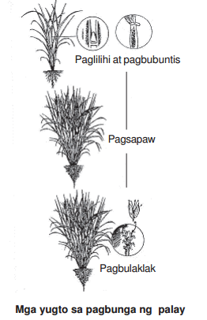

Bumalik
MGA DAPAT ISAALANG-ALANG SA PAGPILI NG PAMAMARAAN SA PAGTATANIM NG PALAY
Lipat-Tanim
-Mas matibay sa kuhol
Madaling pangalagaan sa ibon at
daga ang binhi dahil nasa maliliit
pa lang itong lugar (kamang
punlaan).
-Dahil malaki na ang palay
pagkalipat-tanim, hindi na ito
basta madadaig ng damo.
Matipid sa binhi dahil kaunti
lamang ang kailangan.
-Dagdag gastos ang pagbubunot
at pagtanim ng punla.
Ginagawa lamang sa basang
lupa.
-Nagagambala (transplanting
shock) ang mga ugat sa
pagbubunot at paglilipat-tanim
kaya naaantala nang bahagya
ang paggulang ng tanim.
Sabog-Tanim
-Madaling maubos ng kuhol
Mahirap pangalagaan dahil nsa
buong pinitak kaagad ang mga
butil.
-Dahil halos sabay ang pagtubo at
paglaki ng damo at palay, mas
madaling madaig ng damo ang
palay.
-Mas maraming kailangang na
binhi.
-Hindi na kailangang maghanda ng
punlaan, magbunot ng punla, at
maglipat tanim.
-Puwedeng gawin sa basa o
tuyong lupa.
-Mas maaga nang 7-10 araw ang
paggulang dahil hindi na ito
nakakaranas ng transplanting
shock.
PAMAMAHALA SA SUSTANSYA SA PANAHON NG PAGLAGO
• Kung maglalagay o magsasabog ng abono, bawasan ang lalim ng tubig hanggang sa katamtamang dami ang matitira para tunawin ang abono.
• Mag-abono sa gilid ng mga tanim (sidedress) ng ikatlong bahagi (1/3) ng sakong nitroheno 5-7 araw bago mag-uhay o magbuntis ang palay. Ang inirerekomendang dami ay: Sa tag-ulan 1 sakong 45-0-0 depende sa LCC Sa tag-init 2 sakong 45-0-0
• Para sa maagang gumulang na barayti, mag-abono 45-50 araw matapos magsabog-tanim at 55-60 araw pagkatapos magsabog-tanim para sa mga uring medyo matagal gumulang.
• Kung may mapupunang kakulangan sa zinc, patuyuan ang taniman o magsabog ng zinc sulfate sa daming 10-20 kg bawat ektarya.
• Huwag magsabog ng abono kung basa ang mga dahon ng tanim. Didikit ang abono sa dahon at magiging sanhi ng pagkasunog nito. Ang matutunaw na abono ay sisingaw kasama ng hangin.
• Huwag magsabog ng abono kung may darating na malakas na ulan dahil maanod lamang ito. Panatilihing walang damo ang palayan. Bunutin ang mga damo bago mag-abono.
Paala-ala
Ang labis na nitroheno sa lupa ay nakapagpapalago ng tanim at magiging dahilan ng kanilang paghapay at sanhi upang madadagdagan ang posibilidad ng pag-atake ng mga sakit.
-May tatlong bahagi ang buhay ng palay. Ito ay ang paglaki, pagbunga, at paghinog. Ang bilang ng araw ng paglaki ay nag-iiba ayon sa barayti subalit ang tagal ng pagbunga sa lahat ng barayti ay 35 araw at ang tagal ng paghinog ay 30 araw.
Mga yugto sa pagbunga ng palay

Paglilihi at Pagbubuntis - sa yugtong ito magsisimulang mabuo ang puting malabulak na may hugis kandila sa dulo ng ubod ng palay (panicle primordium) na kung saan kakikitaan ng pagbilog ang puno ng palay (booting) hanggang sa pagbubuntis. Dito rin makikita ang mga suwi na hindi mamumunga.
Pagsapaw - (heading) - ito ang paglabas ng mga uhay ng palay.
Pagbubulaklak - (flowering) - ito ay mag-uumpisa isang araw pagkalabas ng uhay. Ang isang uhay ay aabot ng 7-10 araw ang pagbulaklak. Kasama nito ang pagbuka ng bulaklak, paglaglag ng polen, at paghali (fertilization). Kalimitan, ang pagbuka ng bulaklak ay nag-uumpisa sa dulo ng uhay pababa sa may batok. Ito ay nangyayari mula sa ika-9 ng umaga hanggang ika-2 ng hapon depende sa temperatura.